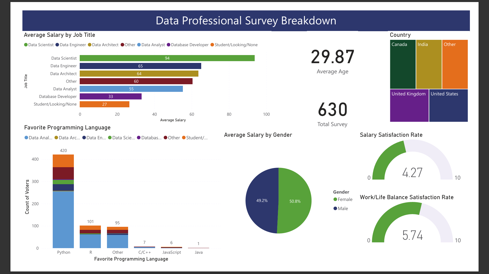

Power BI Project: Data Professional Survey Analysis
Project Description:
This project showcases my ability to leverage Power BI for data visualization and analysis. I explored a dataset containing survey responses from data professionals to gain insights into salary trends, job satisfaction, programming language preferences, and demographic information.
1. Visualizations: The interactive dashboard provides a variety of visualizations to explore the data, including:
2. Key Insights: By interacting with the dashboard, users can uncover valuable insights such as:
This project demonstrates my proficiency in data source connection and manipulation within Power BI, constructing various chart types (bar charts, pie charts, gauge charts) to effectively represent data, creating interactive dashboards for data exploration and storytelling.